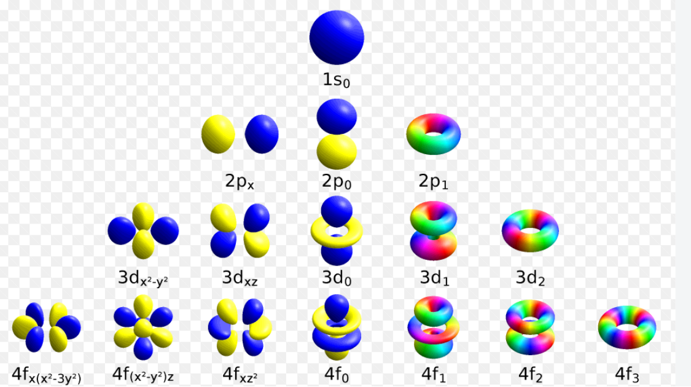

Domaine de physique
Mécanique quantique

Mécanique quantique
La mécanique quantique décrit la matière et la lumière à l'échelle atomique. Elle ne remplace pas la mécanique classique dans son domaine habituel : elle en précise les limites lorsque les dimensions, les énergies ou les mesures deviennent microscopiques.
État quantique et probabilité
Un système est décrit par un état, souvent représenté par une fonction d'onde $\psi$. Son carré de module donne une probabilité de présence ou de résultat de mesure. Cette description conduit à la dualité onde-particule : un électron peut produire des interférences tout en étant détecté par impacts localisés.
La superposition signifie qu'un état peut combiner plusieurs possibilités. La mesure ne révèle pas simplement une valeur déjà définie dans tous les détails : elle donne un résultat parmi ceux permis par l'état, avec des probabilités calculables.
Dynamique et incertitude
L'équation de Schrödinger gouverne l'évolution de l'état quantique non relativiste. Dans de nombreux systèmes liés, elle conduit à des niveaux d'énergie discrets : les atomes n'absorbent et n'émettent donc pas n'importe quelle énergie.
Le principe d'incertitude d'Heisenberg exprime que position et quantité de mouvement ne peuvent pas être simultanément arbitrairement précises. Ce n'est pas un défaut d'appareil : c'est une propriété de la structure quantique des états.
Spin, relativité et champs
Le spin est un moment cinétique intrinsèque, sans équivalent classique direct. À grande vitesse ou pour décrire création et annihilation de particules, il faut combiner quantique et relativité avec l'équation de Dirac et, plus généralement, la théorie quantique des champs.
Le tableau périodique traduit l'organisation des électrons dans les atomes et constitue une excellente porte d'entrée expérimentale vers ces idées.
Pour explorer cette organisation, voir : tableau_periodique.html